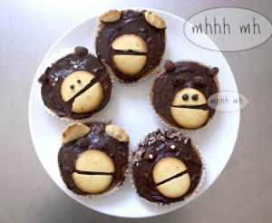

¡El que sea más rápido pinchando pasas, va a comer más!
This is a race of prick raisins.The ones you prick you can eat.
Igel. Dies ist ein Rosinen wettpicken. Die Rosinen, die Du aufspiesst kannst Du essen.
También te puede gustar

Comida
Madalenas / Muffins / Muffins
Madalenas para los reyes Esto es una decoración facilísima para tus madalenas o muffins. King muffins A really easy muffin decoration. Königliche Muffins Eine sehr einfache…
Leer más →
Comida
Palitos / Chopsticks / Stäbchen
Si unes los palitos con una goma (o un cordón) y pones en medio un rollito de papel, puedes conseguir hacer una pinzas ¡y que hasta…
Leer más →
Comida
Manzana mágica / Magic crone / Zauberapfel
Cortas la manzana en ziczac y quitas su interior. ¡El niño que se come una manzana mágica se convierte en rey! Cutt a ziczac and cut…
Leer más →
Comida
Palomitas / Popcorn / Popcorn
¡La versión palomitas para llevar! The version Popcorn to go! Die Version Popcorn für unterwegs.
Leer más →
Comida
Casita de bruja 01 / Whitch house 01 / Hexenhaus 01
Entonces oyeron una voz suave que procedía del interior: ´¿Será acaso la ratitala roe mi casita?Pero los niños respondieron: ´Es el viento, es el viento que…
Leer más →
Comida
Monos / Monkey / Affen
Muffin monos. Una galleta rota hace el papel de boca. Monkey Muffins. A broken cookie is the muzzle. Affen Muffins. Ein kaputter Keks ist das Maul.…
Leer más →